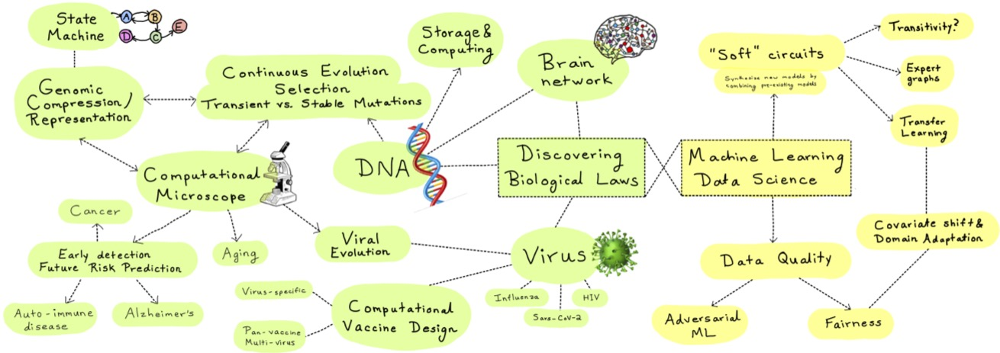

Siddharth Jain
 |
Siddharth Jain |
Research Interests
|  |
My areas of research interests include:
1. Information/computation/optimization theory.
2. Machine Learning and Statistics.
3. Computational Biology and Bioinformatics.
Here is my Research Statement.
Feel free to email me at Send Emailsid496@gmail.com if you are interested in discussing and/or collaborating on anything of mutual interest.
News!
Oct 13, 2021: Our paper titled ``Generator based approach to analyze mutations in genomic datasets,'' got accepted in Nature Scientific Reports [Link]
Sep 8, 2021: Our paper titled ``Glioblastoma signature in the DNA of blood-derived cells,'' got published in PLOS ONE [Link]
Apr 30, 2021: Our paper titled ``Synthesizing new expertize via collaboration,'' got accepted in IEEE ISIT 2021 [arXiv Link]
Sep 25, 2020: Our paper titled ``Robust Correction of Sampling Bias Using Cumulative Distribution Functions,'' got accepted in NeurIPS 2020 [arXiv Link]
July 27, 2020: New paper on bioRxiv, "Predicting the Emergence of SARS-CoV-2 Clades [Link]
May 7, 2020: New paper on arXiv, "Coding for Optimized Writing Rate in DNA Storage" [Link] [Video Link]
Apr 22, 2020: New paper on arXiv, "CodNN - Robust Neural Netowrks from Coded Classification" [Link]
Mar 31, 2020: Three new papers accepted in IEEE ISIT 2020.
- "Coding for Optimized Writing in DNA Storage.''
- "CodNN - Robust Neural Networks from Coded Classification.''
- "What is the Value of Data? on Mathematical Methods for Data Quality Estimation.''
Jan 17, 2020: Paper accepted in NVMW 2020, "Coded Deep Neural Networks for Robust Neural Computation"
Jan 9, 2020: New paper on arXiv, "What is the value of data? On Mathematical Methods for Data Quality Estimation" [Link]
Sept 24, 2019: Our work related to Cancer Classification was accepted to LMRL workshop at NeurIPS 2019
June 20, 2019: We filed a patent on "Mutation Profile and related labeled Genomic Components, Methods and Systems".
May 17, 2019: Our work "Data Equals Money, But How Much? On Mathematical Methods for Data Pricing" got accepted in CodML workshop in ICML
Apr 1, 2019: I successfully defended my PhD thesis "Decoding the Past" [Link]
Mar 21, 2019: I gave an invited talk at Conference on Information Sciences and Systems (CISS) at John Hopkins
Feb 13, 2019: I gave an invited graduation day talk at ITA Workshop in San Diego
Jan 11, 2019: Our article on Cancer Classification using healthy DNA is available on bioRxiv [Link]
Jan 11, 2019: Our article on the statistical bias present in short tandem repeats in amplified samples on TCGA is now available on bioRxiv [Link]
Services
- Reviewer for IEEE Transactions on Information Theory
- Reviewer for IEEE Transactions on Communications
- Reviewer for ACM Transactions on Algorithms
- Reviewer for AAAS Science Advances
- Reviewer for Frontiers in Physiology
- Reviewer for IEEE Communication Letters
- Reviewer for IEEE International Symposium on Information Theory (ISIT), NeurIPS, UAI.